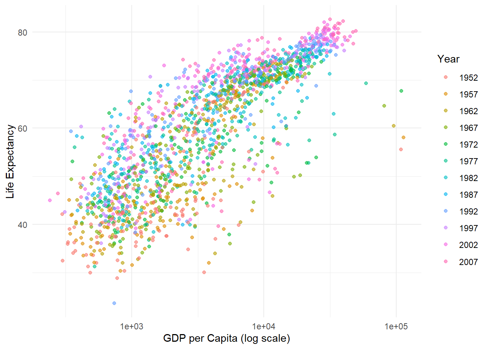

# Load necessary libraries
library(ggplot2)
library(dplyr)
Attaching package: 'dplyr'The following objects are masked from 'package:stats':
filter, lagThe following objects are masked from 'package:base':
intersect, setdiff, setequal, unionlibrary(readr)
# Read the CSV file using read_csv for robust type inference
# Replace the path below with your actual path if needed
gapminder <- read_csv("D:/QTM530/qtm350-quiz02/gapminder.csv")Rows: 1704 Columns: 6── Column specification ────────────────────────────────────────────────────────
Delimiter: ","
chr (2): country, continent
dbl (4): year, life_expectancy, population_millions, gdp_per_capita
ℹ Use `spec()` to retrieve the full column specification for this data.
ℹ Specify the column types or set `show_col_types = FALSE` to quiet this message.# Inspect the structure of the dataset to check column types
str(gapminder)spc_tbl_ [1,704 × 6] (S3: spec_tbl_df/tbl_df/tbl/data.frame)
$ country : chr [1:1704] "Afghanistan" "Afghanistan" "Afghanistan" "Afghanistan" ...
$ continent : chr [1:1704] "Asia" "Asia" "Asia" "Asia" ...
$ year : num [1:1704] 1952 1957 1962 1967 1972 ...
$ life_expectancy : num [1:1704] 28.8 30.3 32 34 36.1 ...
$ population_millions: num [1:1704] 8.43 9.24 10.27 11.54 13.08 ...
$ gdp_per_capita : num [1:1704] 779 821 853 836 740 ...
- attr(*, "spec")=
.. cols(
.. country = col_character(),
.. continent = col_character(),
.. year = col_double(),
.. life_expectancy = col_double(),
.. population_millions = col_double(),
.. gdp_per_capita = col_double()
.. )
- attr(*, "problems")=<externalptr> # Convert columns to appropriate types if necessary
# This step ensures that numeric and integer columns are correctly typed
gapminder <- gapminder %>%
mutate(
year = as.integer(year),
life_expectancy = as.numeric(life_expectancy),
population_millions = as.numeric(population_millions),
gdp_per_capita = as.numeric(gdp_per_capita)
)
# Create a scatter plot with a logarithmic scale for the GDP per capita axis
ggplot(gapminder, aes(x = gdp_per_capita, y = life_expectancy, color = factor(year))) +
geom_point(alpha = 0.6) + # Add points with transparency
scale_x_log10() + # Apply log scale to GDP per capita axis
labs(
x = "GDP per Capita (log scale)",
y = "Life Expectancy",
color = "Year"
) +
theme_minimal() # Use a minimal theme for a clean look